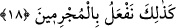
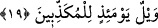
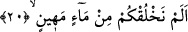

helâk etme noktasında öncekilerin ardından göndereceğiz. Geridekilerin helâk
edilmeleri henüz gerçekleşmemiştir. Bu cümle gelecekte meydana gelecek bir olayı
haber vermek üzere kurulmuştur. Bu âyet-i kerîme Mekke kâfirlerine yönelik bir tehdidi
içermektedir.
18. İşte biz suçlulara böyle yaparız!
İşte biz geride kalan kâfirlere de yukarda haber verdiğim fiilin aynısını yaparız. Bir
başka ifâdeyle; Bizim âdetimiz hep bu şekilde cereyan eder. Bu, günahın âkıbeti ve kötü
sonuçları hakkında bir uyarı ve bir sakındırma ifâde etmektedir.
19. O gün, (hakîkatleri) yalan sayanların vay hâline!
“O gün” Allah’ın âyetlerini ve peygamberlerini “yalan sayanların vay hâline!” Bu
son cümleye baktığımızda yukardakinin bir tekrarı gibi zannedilmektedir. Oysa
yukarıdakinin bir tekrarı değildir. Çünkü yukardaki “veyl” âhiret azâbı ile ilgiliydi.
Oysa bu âyetteki “veyl” dünya azâbı ile ilgilidir.
Burhanu’l-Kuran’da şöyle deniyor: Allah Teâlâ bu sûrede, bu âyeti tam on kez tekrar
etmiş ve her defasında bir önceki âyetten başka anlam ifâde eden bir âyeti izlemiştir. Şu
hâlde sûrede çirkin ve hoş görünmeyen bir tekrar mevcûd değildir. Bu tekrarlar
yapılmamış olsaydı, o zaman kimileri için tehdid bulunurken, kimileri için
bulunmayacaktı.
Derler ki; tekrar etmek ve sözü uzatmak Arapların âdetlerindendir. Nitekim sözü kısa
tutmak ve îcaz yapmak da onların ayrı âdetlerindendir. Herhangi bir teşvik ve korkutma
ifâdesinde sözü uzatmak, istenilen amaca ulaşmakta onu kısa tutmaktan daha iyi ve daha
sonuç alıcıdır. Söz uzatıldığında herkes kendi nefsinde hiç kuşkusuz tekrarın etkisini
daha çok görecektir.
20. (Ey insanlar!) Biz sizi değersiz bir sudan yaratmadık mı?
“Biz sizi değersiz bir sudan” sonradan olan, mümkün ve mübtezel, değersiz bir
sudan, bir başka ifâdeyle; pis ve değersiz bir menîden “yaratmadık mı?” Menînin